Blog Posts all posts
Rendevous with Michael and Justine Baukus 2016-12-16
We hungout for a few more days in Fort Collins before heading to Greeley for Michelle's show at Brix Taphouse.
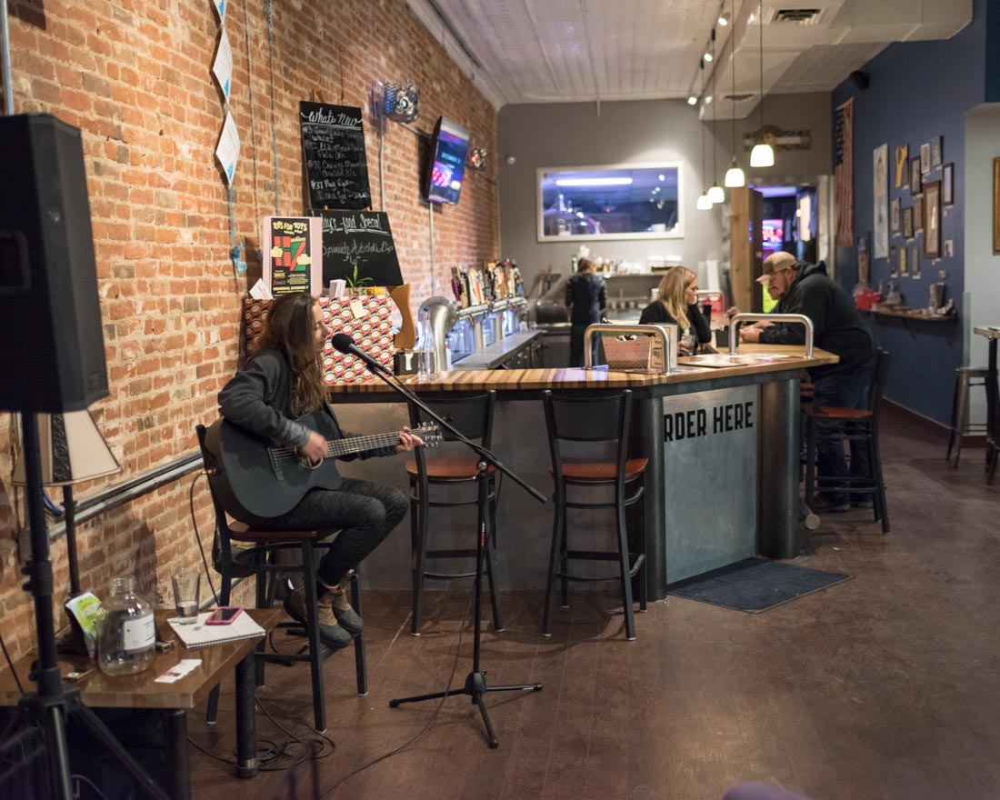Michelle playing at Brix.
After Greeley we headed to Thornton, CO to meet up with Michael and Justine Baukus. We attended there wedding just about a month and a half earlier. We took the dogs (Lexi and Eli) to the dog park and then went out to a local bar while Justine was at a work christmas party.
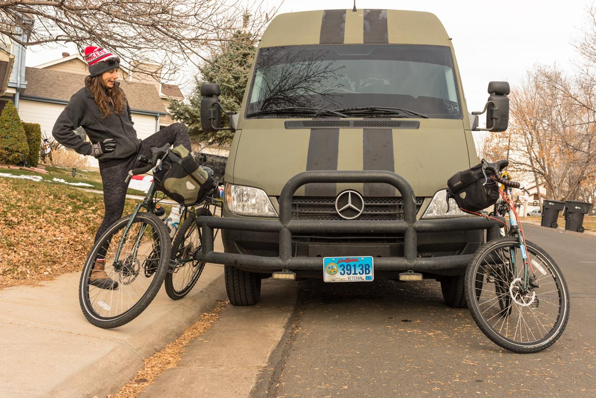Getting ready for a bike ride.
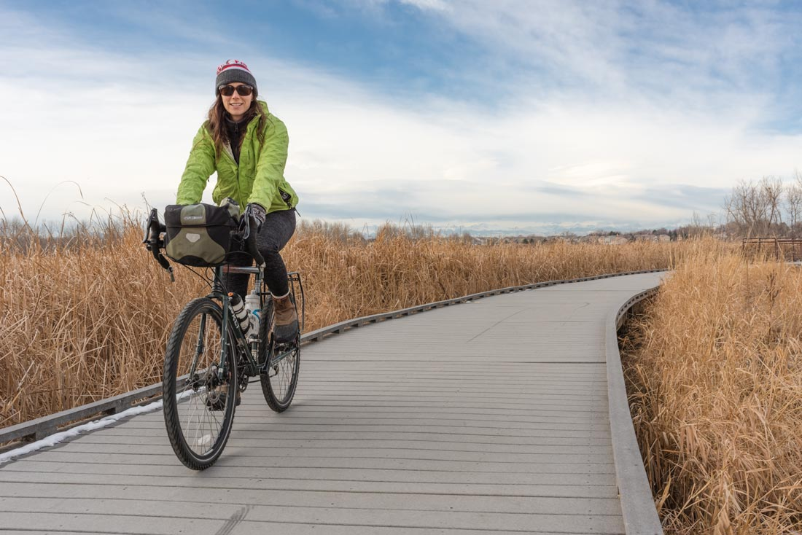Michelle riding through East Lake Shores Park
Rocky mountain cat tails.
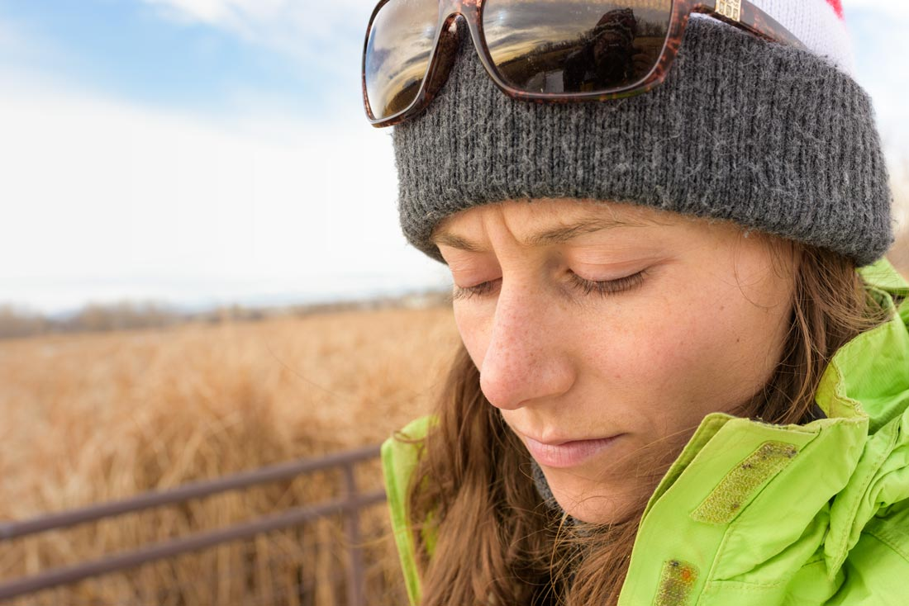Michelle pondering unknown complexities.
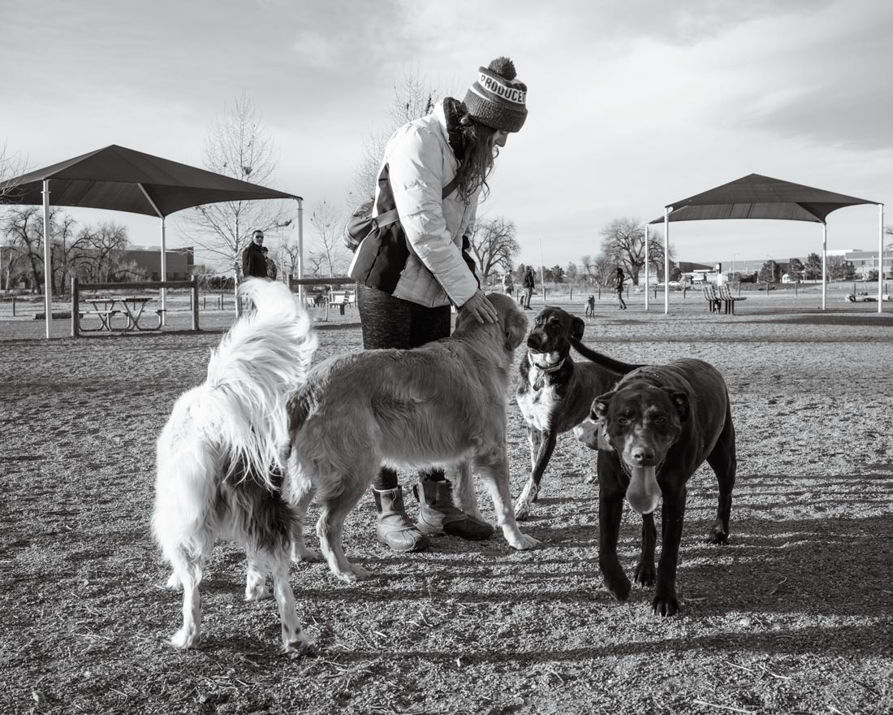All of the dogs!
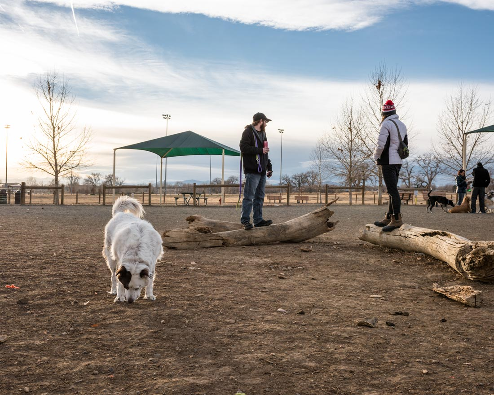Lexi, Michael, and Michelle.
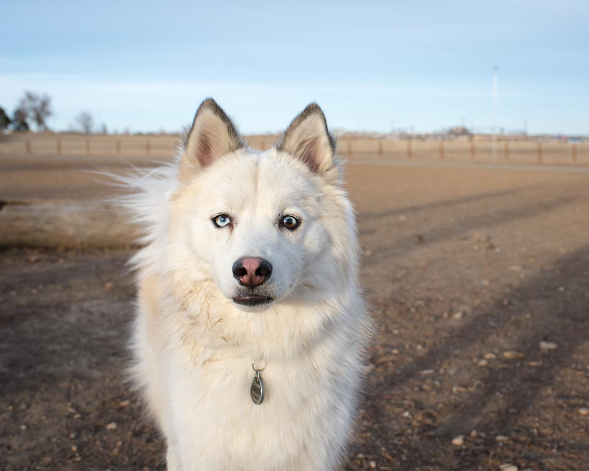Random dog at the dog park.
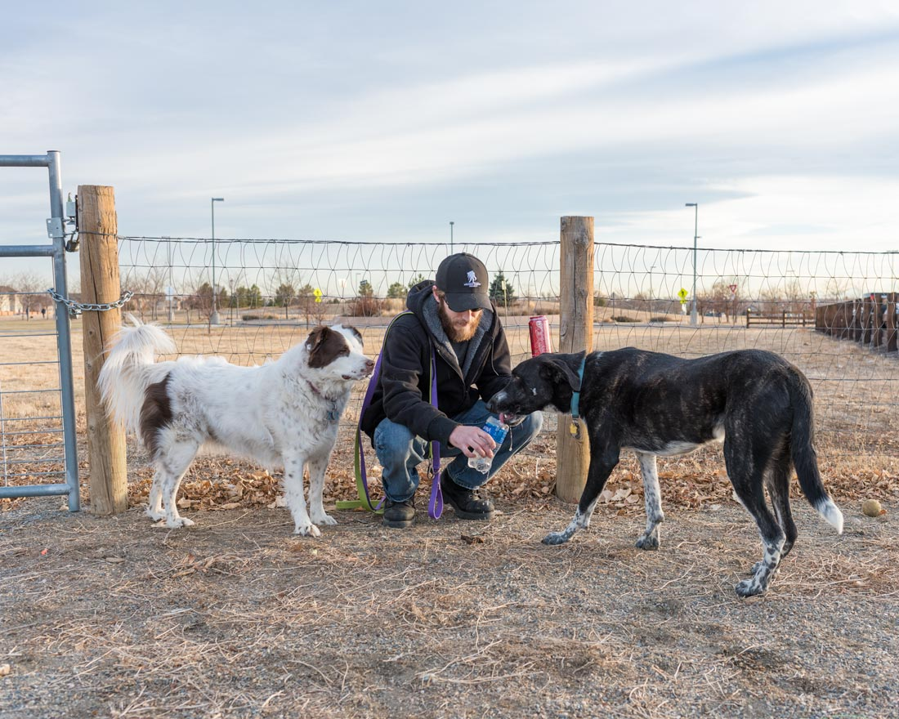Michael giving Eli a drink.
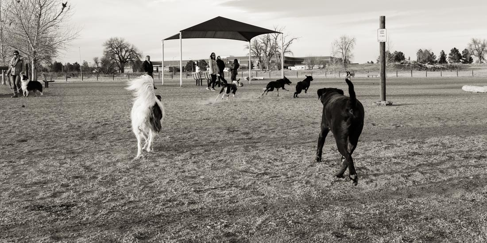Thug Dog Life
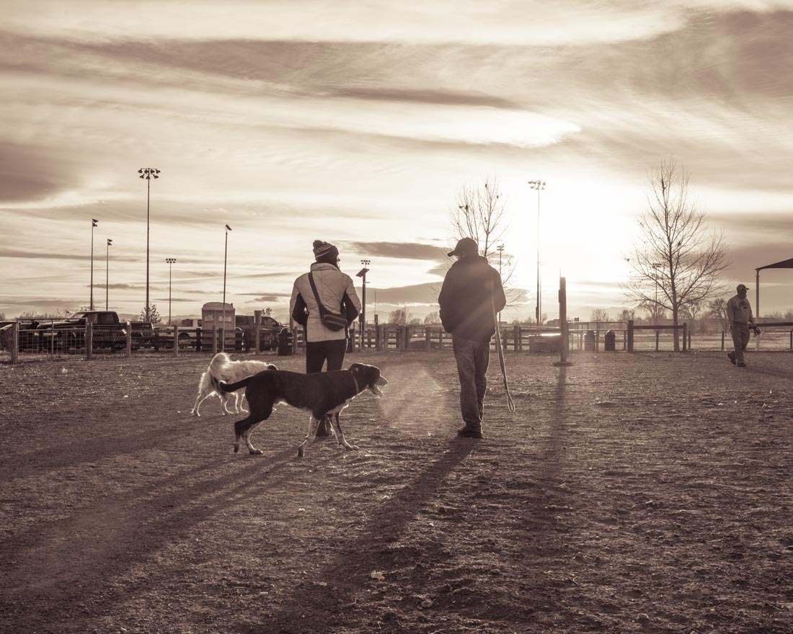Let's get outta here.
They printed one of my photos and have it hanging up in there living room. It was pretty cool to see.
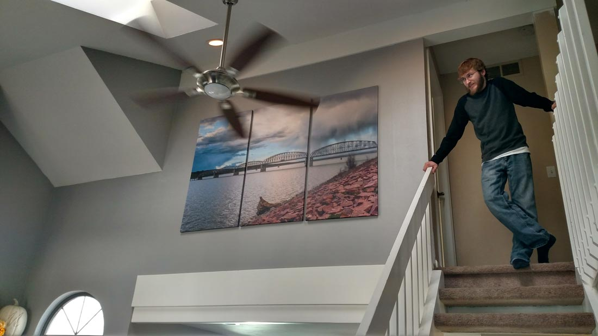Michael standing next to photo.

Closer shot.